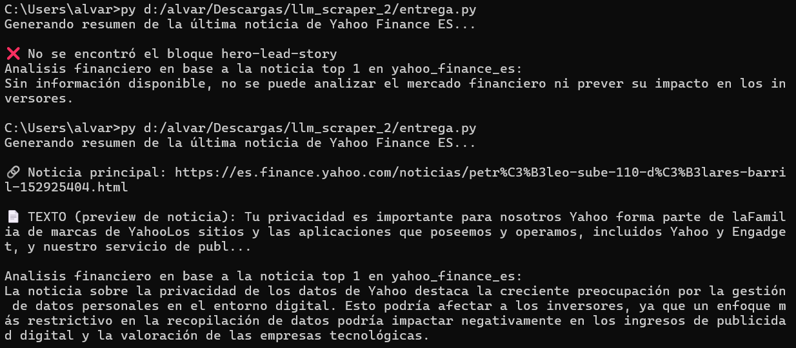

En esta práctica desarrollamos un script en Python para analizar páginas web, extraer información relevante y organizar los resultados de forma útil. Además, utilizamos el contenido obtenido para generar un pequeño análisis automático.
Dificultad
Media
Tecnologías
Python · Requests · BeautifulSoup
Estado
Entregada
Resumen
CompletadaEnunciado
El objetivo es crear un programa capaz de recorrer una web y extraer información útil de forma automatizada. La idea no es solo acceder al HTML, sino procesarlo y guardar resultados que puedan servir para análisis posterior.
Parte técnica
ScrapingParte analítica
ReflexiónEntrega
En nuestra resolución se desarrolló un script que accede a Yahoo Finance ES para localizar la noticia principal, extraer su contenido y generar después un pequeño análisis automático a partir del texto recuperado.
Apartado 1
El script realiza una petición HTTP a la página objetivo y analiza el HTML con BeautifulSoup para localizar la noticia principal y recuperar su enlace y parte del texto.
import requests
from bs4 import BeautifulSoup
url = "https://es.finance.yahoo.com/"
response = requests.get(url)
soup = BeautifulSoup(response.text, "html.parser")
titulos = soup.find_all("h1")
parrafos = soup.find_all("p")
Apartado 2
Una vez obtenido el contenido, se utiliza un modelo de lenguaje para generar un análisis breve del texto encontrado. Así, la práctica combina extracción de información y tratamiento automático.
from openai import OpenAI
client = OpenAI(api_key="TU_API_KEY")
response = client.chat.completions.create(
model="gpt-4o-mini",
messages=[
{"role": "user", "content": texto_noticia}
]
)
Apartado b
Información extraídaAdemás del caso concreto de Yahoo Finance ES, planteamos la extracción de los distintos tipos de información solicitados en la práctica. El objetivo era cubrir no solo texto, sino también recursos y datos útiles para análisis posterior.
i. Texto
Se extrae texto visible de forma estructurada, especialmente títulos, cabeceras y párrafos. Esto permite separar la información principal del resto del HTML.
titulos = [h.get_text(strip=True) for h in soup.find_all(["h1", "h2", "h3"])]
parrafos = [p.get_text(strip=True) for p in soup.find_all("p")]
ii. Imágenes
Las imágenes se pueden localizar mediante las etiquetas img y guardar sus rutas
para descargarlas después en una carpeta, por ejemplo imagenes/.
imagenes = [img["src"] for img in soup.find_all("img", src=True)]
iii. Hipervínculos
Los enlaces encontrados se pueden guardar en un archivo de texto, lo que resulta útil para revisar la estructura de la web o reutilizar esas URLs más adelante.
links = [a["href"] for a in soup.find_all("a", href=True)]
with open("links.txt", "w", encoding="utf-8") as f:
for link in links:
f.write(link + "\n")
iv. Contactos
También se contempla la búsqueda de detalles de contacto, especialmente direcciones de correo electrónico, que pueden ser relevantes en tareas de OSINT.
import re
emails = re.findall(
r"[A-Za-z0-9._%+-]+@[A-Za-z0-9.-]+\.[A-Za-z]{2,}",
html
)
v. Archivos
Se puede detectar si una web enlaza a documentos como PDFs u otros archivos y recoger esas URLs para su posible descarga.
archivos = [
a["href"] for a in soup.find_all("a", href=True)
if a["href"].lower().endswith((".pdf", ".docx", ".xlsx"))
]
Resumen del apartado
En conjunto, el scraping no se limita a copiar texto, sino que permite extraer de forma masiva diferentes tipos de información útiles para análisis, organización y monitorización.
Ejecución
CapturaEn la siguiente imagen se puede ver la ejecución del script y el resultado obtenido con la noticia principal y el análisis generado.

Noticia principal: https://es.finance.yahoo.com/noticias/... Texto (preview): Tu privacidad es importante para nosotros... Análisis: impacto en inversores y tratamiento de datos...
Resultado final
Respuestas a la parte teórica
En este apartado respondemos a las preguntas planteadas al final de la práctica.
2.a
Uso realCon programas de scraping se puede recoger información pública de internet de manera rápida y automática. Esto permite ahorrar mucho tiempo cuando hay que revisar muchas páginas, comparar contenidos, monitorizar cambios o generar bases de datos a partir de información visible.
Un uso real que se nos ocurre es la monitorización automática de noticias económicas para detectar titulares relevantes, guardarlos y generar resúmenes o alertas sin tener que revisar manualmente cada medio.
2.b
OSINTEn un contexto de OSINT, se puede scrapear información pública como nombres, correos electrónicos, teléfonos publicados, enlaces a perfiles, noticias relacionadas, documentos enlazados, imágenes, publicaciones web, referencias a empleados, ubicaciones y datos corporativos visibles.
En el caso de una empresa, esto puede servir para construir una visión general de su presencia online. En el caso de una persona, podría ayudar a localizar perfiles públicos, menciones, webs personales o direcciones de contacto expuestas.
2.c
Redes socialesSí, puede ser útil en redes sociales para recopilar publicaciones públicas, hashtags, perfiles, enlaces, fechas o patrones de actividad. Esto puede servir para análisis de tendencias, reputación, seguimiento de campañas o tareas de OSINT.
Los principales problemas son los límites de acceso, los sistemas anti-bot, el uso de contenido cargado dinámicamente con JavaScript, cambios frecuentes en la estructura de la página y, además, cuestiones legales y de privacidad si se intenta recopilar información de forma masiva sin respetar las condiciones de uso.
3.a
ValoraciónLa práctica nos ha parecido de dificultad media. La idea general se entiende rápido, pero lo más delicado es adaptar el script a la estructura real de cada web, limpiar bien los datos y comprobar que los selectores usados siguen funcionando.
También hemos visto que, aunque el scraping básico es sencillo, cuando se quiere hacer algo más robusto aparecen problemas como rutas relativas, contenido dinámico o páginas que limitan el acceso. Por eso, aunque la base no es difícil, hacer un scraper sólido requiere bastante más cuidado.
Conclusión
Esta práctica tiene utilidad real porque muestra cómo automatizar la recogida de información pública en internet. Es especialmente interesante en tareas de monitorización, análisis de datos y OSINT.
Nos ha servido para entender mejor cómo se estructura una web por dentro y cómo se puede extraer información concreta de forma automática. También hemos visto sus limitaciones y la importancia de adaptar el código a cada caso real.
👥 Conclusión general: el web scraping es una técnica muy útil para automatizar la recopilación de información, pero depende mucho de la estructura de la web y de las restricciones de acceso. Aun así, bien planteado, puede aportar mucho valor en análisis y OSINT.